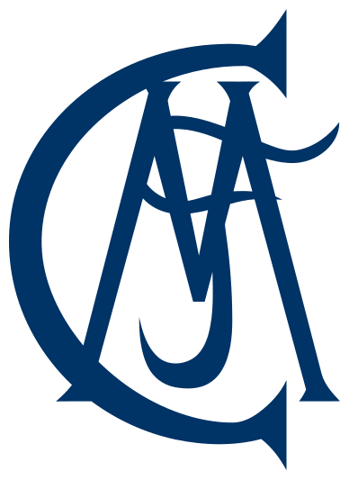
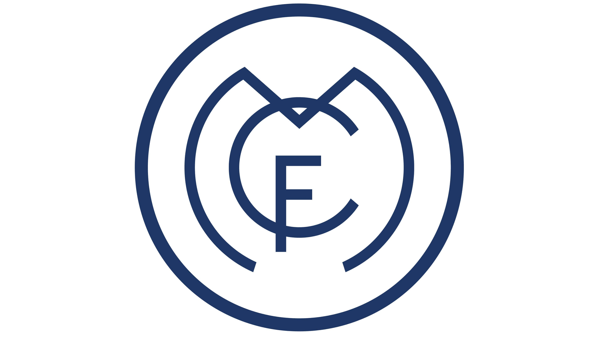
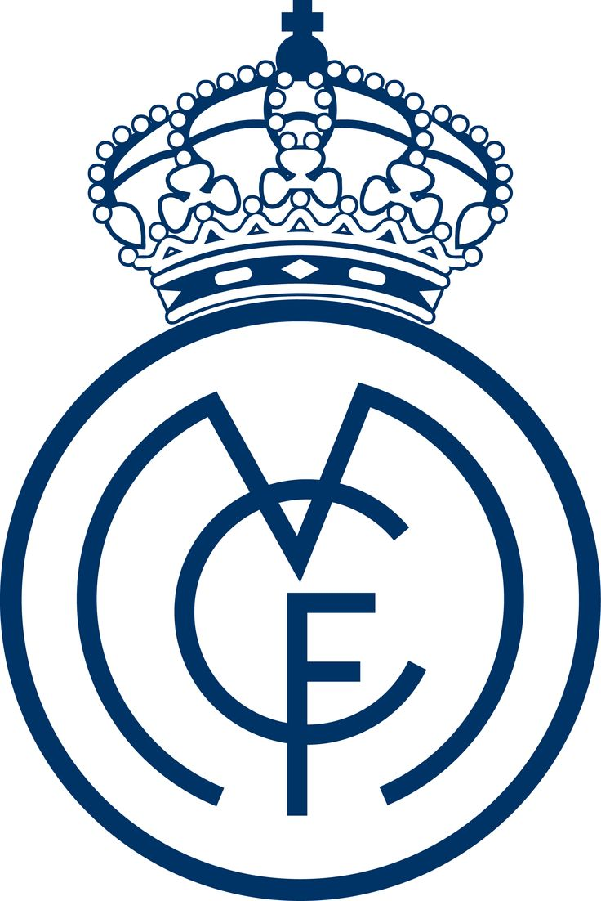
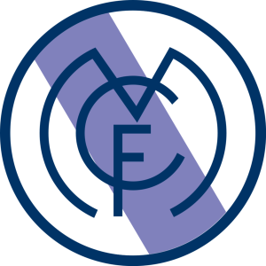
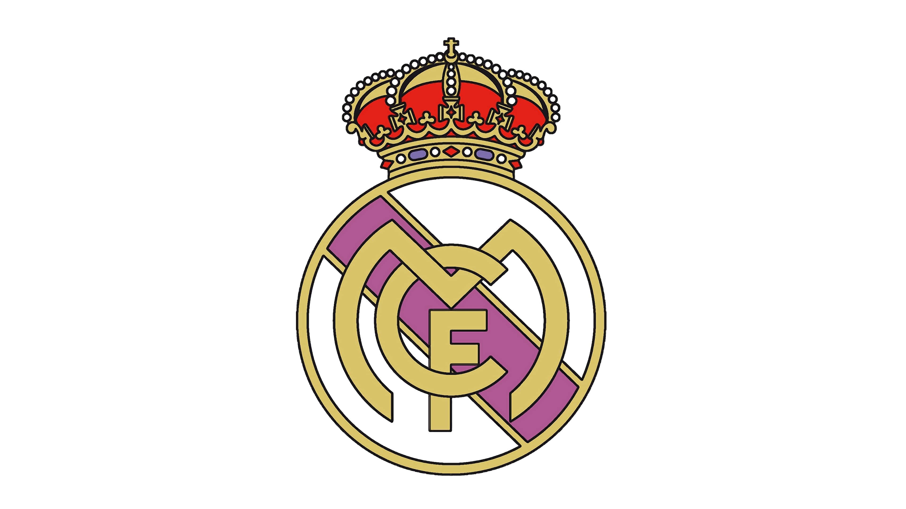
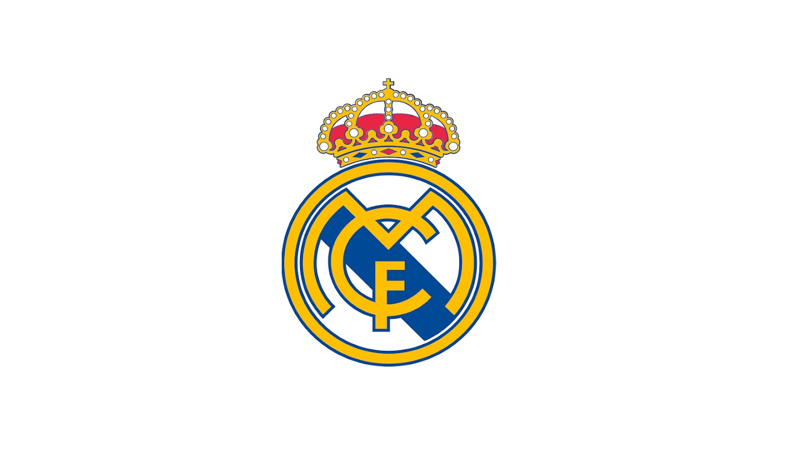

ESCUDOS
Escudos del Real Madrid a lo largo de su historia
1️⃣ 1902–1908: Primer escudo

El primer escudo fue muy sencillo, compuesto únicamente por las letras entrelazadas “MCF” (Madrid Club de Fútbol), sin corona ni colores.
2️⃣ 1908–1920: Letras entrelazadas

Se mantuvo el estilo de las letras entrelazadas, pero con un diseño más estilizado y simétrico.
3️⃣ 1920–1931: Se añade la corona real

Con la concesión del título “Real” por parte del rey Alfonso XIII, se incorporó la corona sobre las letras, dándole carácter oficial.
4️⃣ 1931–1941: Segunda República – sin corona

Durante la Segunda República Española, el escudo perdió la corona. Se añadió una franja morada diagonal, que representa la bandera de Castilla.
5️⃣ 1941–1997: Vuelve la corona

Tras el final de la República, se recuperó la corona y se mantuvo la franja morada. Este escudo se usó durante gran parte del siglo XX.
6️⃣ 1997–2001: Modernización

El escudo se rediseñó ligeramente para hacerlo más moderno, con trazos más definidos y colores más vivos.
7️⃣ 2001–Actualidad

Se ajustaron colores y proporciones para un diseño más digital y limpio. Se utiliza en todas las competiciones oficiales y productos del club.
Volver a la página principal